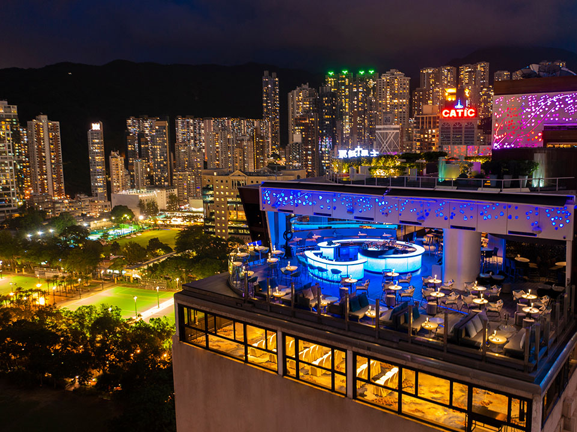
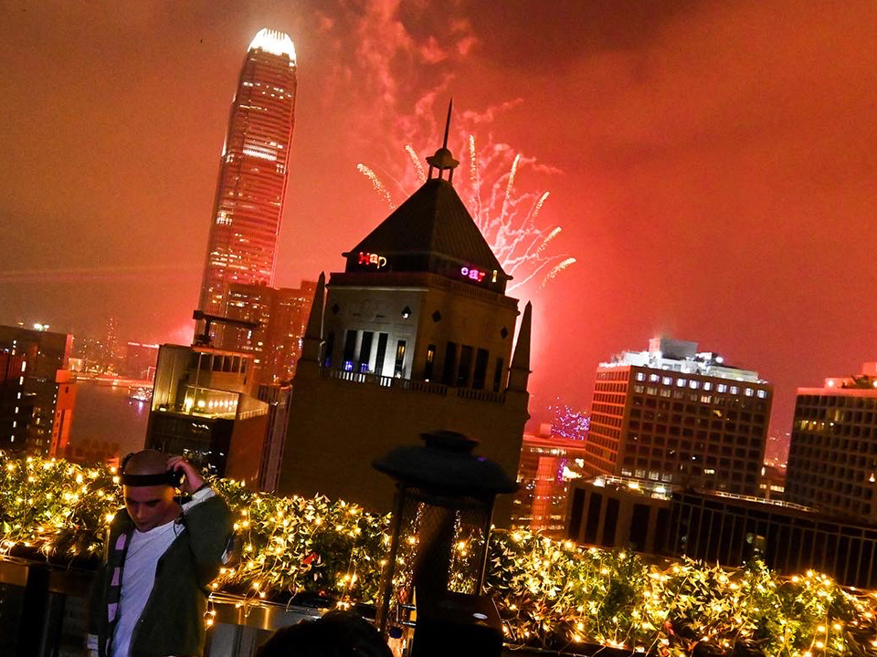
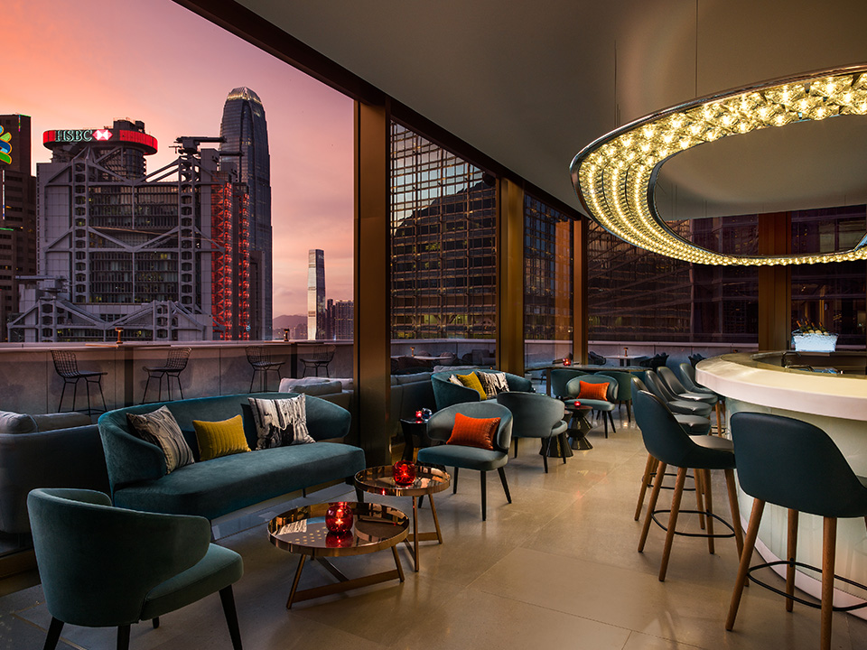
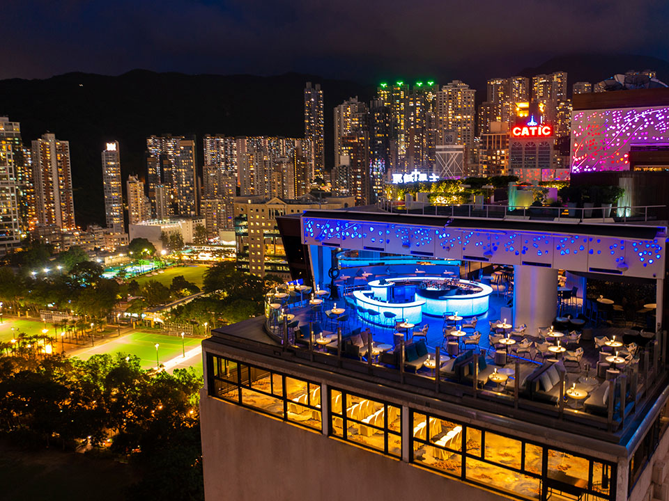
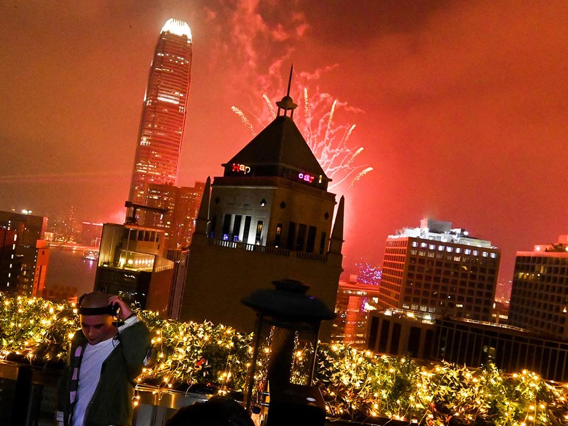
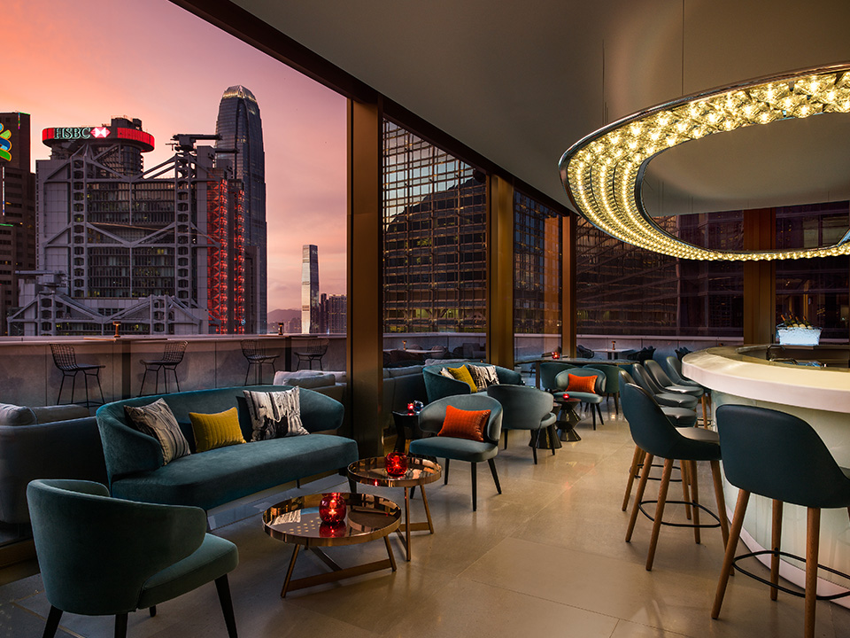

夜遊景點 - 香港絕佳景致天臺酒吧

 





Sevva
由香港「品味女王」郭志怡創辦的Sevva設計充滿活力，並帶有些許20年代裝飾藝術的韻味。酒吧位於中環太子大廈的頂樓，是城中時尚人士晚間聚會的熱門據點。Sevva的用餐區懸掛了一盞用76,000顆水晶手工製成的萬花筒吊燈，極為吸睛；其環繞式露台則坐擁360度無死角的九龍和港島美景。酒吧不僅有DJ打碟，更配有德國製造的音樂會級別音響系統，帶來動感十足的炫酷節奏，讓你盡情享受每一刻。
Sugar
Sugar 位於東隅酒店頂樓，除了觀賞絕美日落，更能品味精緻調酒。酒吧情調浪漫，是親密約會或女士們聚會的首選之地。不過由於其人氣極旺，記得要提前預約。以氣泡酒為基調的Petal Fizz、芳香四溢的Pandan Forest等特色調酒都是上佳選擇。若是嘴饞，還可以點一份濃香的松露薯條或火辣辣的墨西哥辣椒，一飽口福。
Skye
城中潮人們都知道，Skye是香港必去的打卡勝地。在這裡，閃亮奪目的獨特弧形酒吧和下方的銅鑼灣繁華街景相映成趣、美不勝收。香檳和氣泡酒是常客之選，不過新推出的以星座為靈感的系列調酒也頗受歡迎。酒吧位於柏寧酒店的天臺，經常滿座，因此週末最好早點來到以避開人群，並找一張風景迷人的桌檯。小酌一番後，再進入室內用餐區，品嚐大廚Florian Muller 製作的美味佳餚。
Faye
Faye位於香港著名派對區蘭桂坊的心臟地帶，是出名的夜生活好去處。這個天臺酒吧位於加州大廈的26樓（樓下是酒吧的室內區），其名字來自北歐神話中的女神。沿着一節獨特的黃色樓梯直上天臺，奪目的霓虹燈標識為充滿現代感的設計帶來一絲復古氣息。趁着日落時分，來這裡觀賞夕陽西下；夜幕降臨後，一邊暢飲美酒，一邊跟着節奏起舞，盡情享受一整晚的美好時光。
Popinjays
Popinjay是一種色彩絢麗、喜愛說話的鸚鵡，而香港美利酒店以此為靈感打造的天臺酒吧Popinjays吸引了城中穿著考究的菁英們在此雲集、談天說地，實在是不愧其名。你可以在主用餐區享受優雅的下午茶以及由英籍大廚Lexine Hepworth 主理的精緻菜餚，也不妨在寬敞的環繞式戶外露台小酌一杯，吹着微風放鬆心情。喜歡琴酒的朋友們一定不能錯過酒吧的多款精選金湯力，你能品嚐到十多種搜羅自世界各地的高級琴酒。同時，與別不同的Aviary Collection是一系列以雀鳥為主題的雞尾酒——用軒尼詩XO干邑和波特酒調製的 Eagle Eye，以及含有紫荊花琴酒和櫻花糖漿的The Brooding Macaw，都非常值得一試。趕緊好好打扮一番，直上天臺享受美酒佳餚和無敵景致吧！